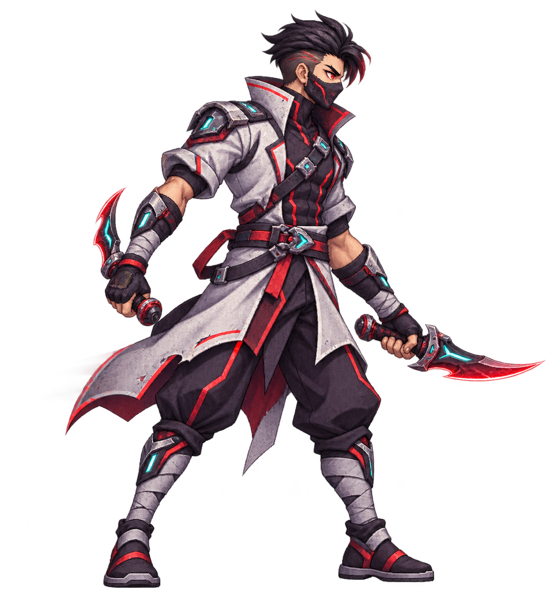
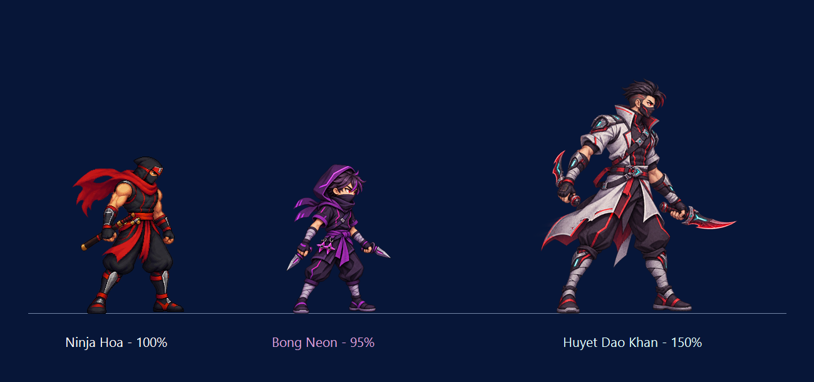

TASK 10.16 · BOSS MAP01 · ART CANDIDATE
HUYẾT ĐAO KHAN, SÁT THỦ MẶT NẠ
Tạo hình để duyệt: sát thủ song đao tốc độ cao, áo street-assassin xẻ tà trắng xám, mắt đỏ, hai lưỡi đao cong ánh đỏ–cyan. Chiều cao hiển thị đề xuất bằng 150% Ninja Hỏa, căn cùng mặt đất.

Ảnh gốc RGBA · bóng mờ chỉ minh họa hướng FX, chưa là frame dash
So chiều cao trên cùng mặt đất

Cỡ 150% được đặt bằng một hệ số vẽ từ vùng pixel có alpha ≥128 của pose này; ảnh nguồn không bị resize. Chưa có atlas animation, điểm spawn, collider, hitbox, AI hay runtime boss.
Mở PNG gốc · Metadata và provenance · Báo cáo review